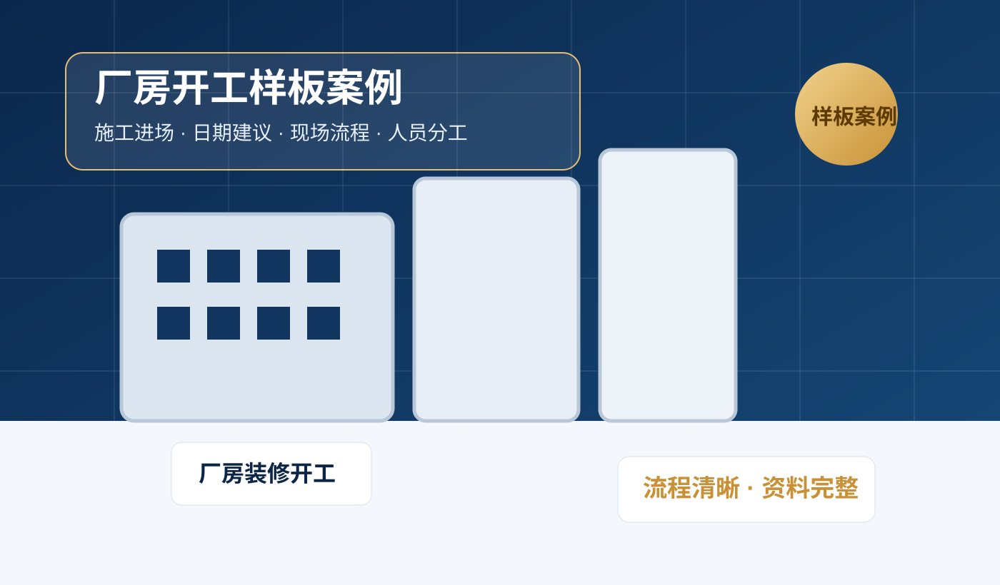
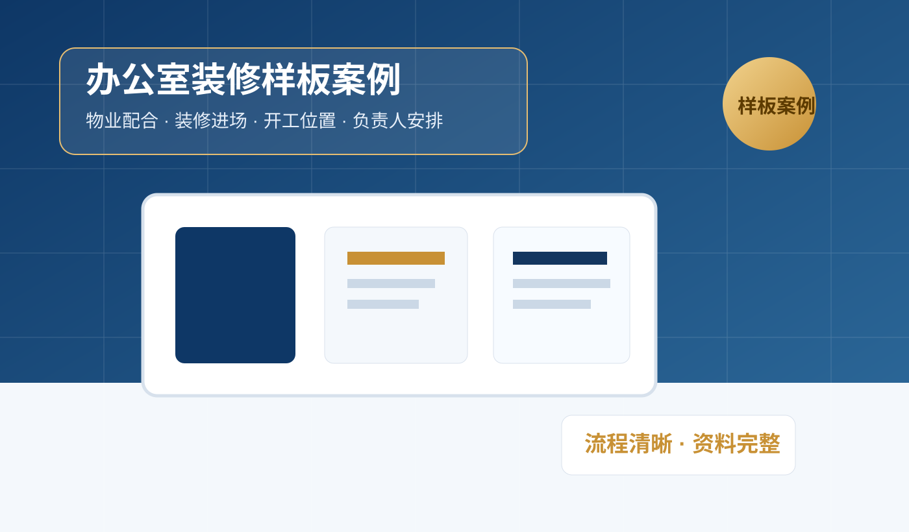

你现在还没有成熟真实案例，不建议硬编客户聊天和成交截图。更稳妥的方式是先用“样板案例”展示咨询流程、交付结构和专业判断方式。
假聊天、假成交、假现场图短期看起来热闹，但长期伤害信任。样板案例更适合你现在的阶段，专业、稳妥、不越界。
先覆盖最容易成交的商业场景：厂房、门店、办公室。

展示厂房装修、施工进场、负责人协调和开工流程如何组织。
展示开门时间、员工分工、开业动线和当天流程如何安排。

展示物业配合、施工进场、负责人安排和开工位置如何确认。
不展示客户姓名、电话、详细地址、合同金额等敏感信息。
重点写客户遇到什么问题、你如何梳理、最终交付了什么文件。
不写“做完必发财、必顺利”，只写流程清晰、安排省心、执行顺畅。